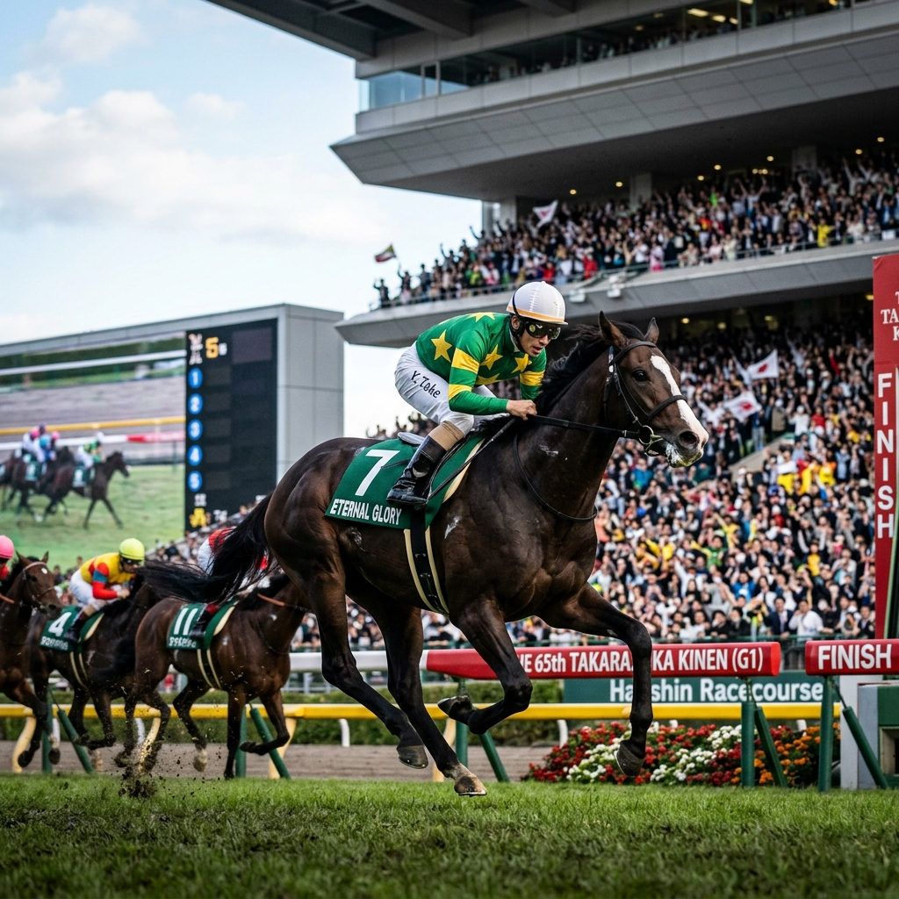
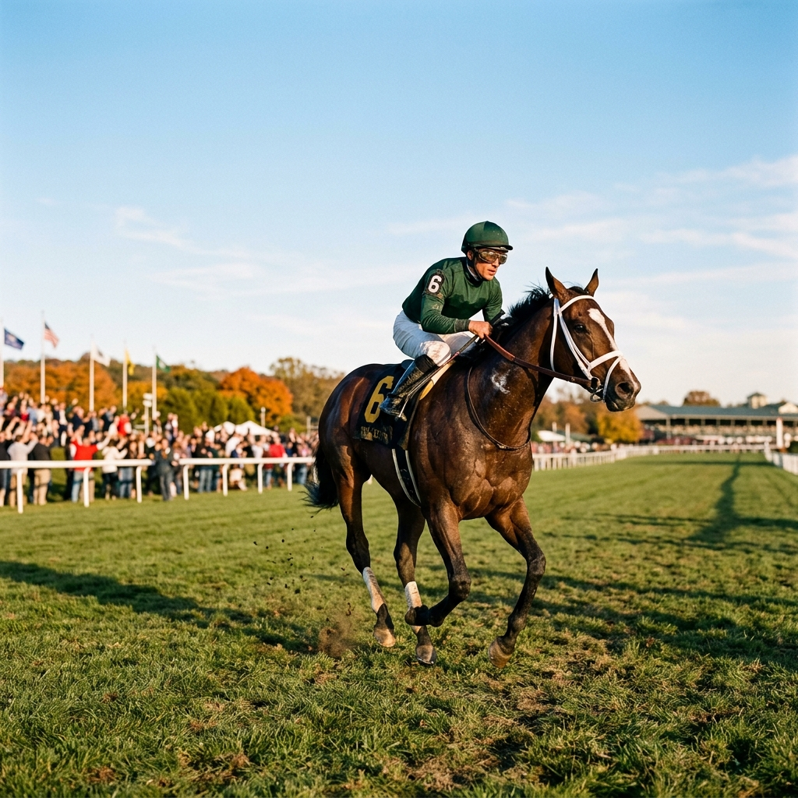

語り継がれる伝説の瞬間
2着に11馬身もの差をつけた、日本競馬史上最も衝撃的な圧勝劇。 このレースで「異次元の逃亡者」という異名が不動のものとなりました。

圧倒的な人気を背負い、ファン投票1位に応えて逃げ切り勝ち。 「サイレントスズカ、どこまで行っても逃げまくる！」と実況が響きました。

誰も追いつけないスピードの彼方へ消えた、最後の逃亡劇。 あの日、東京競馬場が静まり返った瞬間を、私たちは決して忘れません。